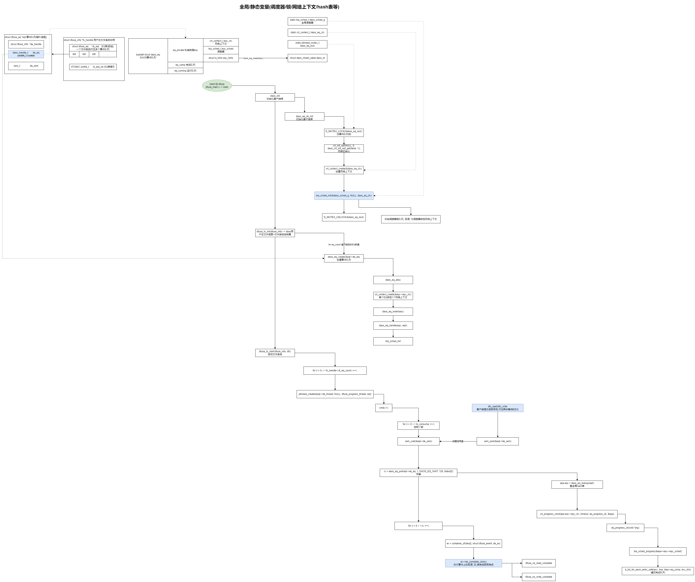

DAOS的事件队列(EventQueue)与事件(Event)和任务调度引擎(TSE)及源码分析
DAOS的事件队列(EventQueue)与事件(Event)和任务调度引擎(TSE)及源码分析
简介
事件和事件队列
DAOS API 函数可以在阻塞或非阻塞模式下使用。 这是通过传递给每个 API 调用的指向 DAOS 事件的指针来确定的：如果 NULL 表示操作将被阻塞。 操作完成后会返回。 所有失败情况的错误码都将通过API函数本身的返回码返回。 如果使用有效的事件，则该操作将以非阻塞模式运行，并在内部调度程序中调度该操作以及将 RPC 提交到底层堆栈后立即返回。 如果调度成功，则操作的返回值为success，但并不表示实际操作成功。 返回时可以捕获的错误要么是无效参数，要么是调度问题。 当事件完成时，操作的实际返回代码将在事件错误代码 (event.ev_error) 中提供。 必须首先通过单独的 API 调用创建要使用的有效事件。 为了允许用户一次跟踪多个事件，可以将事件创建为事件队列的一部分，事件队列基本上是可以一起进行和轮询的事件的集合。 事件队列还在内部为所有 DAOS 任务创建一个单独的任务调度程序以及一个新的网络上下文。 在某些网络提供商上，网络上下文创建是一项昂贵的操作，因此用户应尝试限制在 DAOS 之上的应用程序或 IO 中间件库中创建的事件队列的数量。 或者，可以在没有事件队列的情况下创建事件，并单独跟踪。 在这种情况下，对于阻塞操作，将使用内部全局任务调度程序和网络上下文来代替为事件队列创建的独立任务调度程序和网络上下文。 事件完成后，它可以重新用于另一个 DAOS API 调用，以最大限度地减少 DAOS 库内事件创建和分配的需要
DAOS Task API 提供了一种以非阻塞方式使用 DAOS API 的替代方法，同时在 DAOS API 操作之间构建任务依赖树。 这对于使用 DAOS 并需要构建彼此之间具有依赖关系（N-1、1-N、N-N）的 DAOS 操作计划的应用程序和中间件库非常有用
要利用任务 API，用户需要创建一个调度程序，其中可以创建 DAOS 任务作为其中的一部分。 任务 API 足够通用，允许用户混合 DAOS 特定任务（通过 DAOS 任务 API）和其他用户定义的任务，并在这些任务之间添加依赖关系
有关如何在客户端库中使用 TSE 的更多详细信息，请参阅 TSE 内部文档(https://github.com/ssbandjl/daos/blob/master/src/common/README.md)以获取更多详细信息
事件与事件队列及任务调度引擎流程图

流程说明(dfuse为例)
以DAOS用户态文件系统dfuse为例
-
在初始化客户端库中初始化事件队列, 关联全局网络上下文, 设置调度器
-
启动文件系统中注册了SLAB, 绑定事件队列和事件, 参考: daos_event_init
-
开启轮训线程dfuse_progress_thread, 参考daos_eq_poll
-
文件系统执行写
客户端写数据：xb/write.c -> write(fd, direct_write_buf, BUF_SIZE) write -> dfuse_cb_write 回调写 src/client/dfuse/fuse3 -
封装ev, 并将ev传下去: dfs_write(oh->doh_dfs, oh->doh_obj, &ev->de_sgl, position, &ev->de_ev)
1 2 3 4 5 6 7 8 9 10 11 12 13 14DAOS用户态文件系统, 写流程 master -> src/client/dfuse/ops/write.c -> dfuse_cb_write(fuse_req_t req, fuse_ino_t ino, struct fuse_bufvec *bufv, off_t position, struct fuse_file_info *fi) struct dfuse_projection_info *fs_handle = fuse_req_userdata(req) eqt_idx = atomic_fetch_add_relaxed(&fs_handle->di_eqt_idx, 1) -> 原子递增,每次返回+1前的值, 比如: eqt_idx=7 eqt = &fs_handle->di_eqt[eqt_idx % fs_handle->di_eq_count] -> 取余打散到eq ev = d_slab_acquire(eqt->de_write_slab) -> 分配EV, 需要提前注册: d_slab_register(&fs_handle->di_slab, &write_slab, eqt, &eqt->de_write_slab) ev->de_complete_cb = dfuse_cb_write_complete dfs_write(oh->doh_dfs, oh->doh_obj, &ev->de_sgl, position, &ev->de_ev) -> dfs_write(dfs_t *dfs, dfs_obj_t *obj, d_sg_list_t *sgl, daos_off_t off, daos_event_t *ev) daos_array_write(obj->oh, DAOS_TX_NONE, &iod, sgl, ev) -> daos_array_write(daos_handle_t oh, daos_handle_t th, daos_array_iod_t *iod, d_sg_list_t *sgl, daos_event_t *ev) dc_task_create(dc_array_write, NULL, ev, &task) -> 关联EV和task sched = daos_ev2sched(ev) -> 拿到调度器指针, 初始化调度器 return dc_task_schedule(task, true) sem_post(&eqt->de_sem) -> 唤醒EQ d_slab_restock(eqt->de_write_slab) -> 重用slab -
与tse结合构造task, 调度task
-
网络回复后, 在轮训线程中trigger到, 拿到ev和task, 逐层向上级执行回调函数, 最终执行业务回调
源码分析
|
|
总结
- DAOS的任务调度引擎结合事件队列和事件, 与网络上下文绑定完成抽象封装, 可作为项目第三方组件引入, 结合业务, 完成同步和异步任务调度(依赖任务处理,如多副本写, EC), 事件, 事件队列, 任务, 调度器, HASH表, SLAB, 各种运行队列, 完成队列, 完成回调队列, 延迟队列…, 可应对复杂的业务调度和管理需求
- 一个文件系统绑定多个事件队列, IO打散到每个事件队列, 负载均衡
- 全局HASH表结合cookie作为key, 快速捞回事件队列
参考
DAOS客户端API_事件和事件队列及任务调度引擎: https://github.com/ssbandjl/daos/tree/master/src/client/api
晓兵
博客: https://logread.cn | https://blog.csdn.net/ssbandjl | https://cloud.tencent.com/developer/user/5060293/articles
weixin: ssbandjl
公众号: 云原生云

- 原文作者：晓兵
- 原文链接：https://logread.cn/post/daos/daos_eq_and_event/
- 版权声明：本作品采用知识共享署名-非商业性使用-禁止演绎 4.0 国际许可协议进行许可，非商业转载请注明出处（作者，原文链接），商业转载请联系作者获得授权。